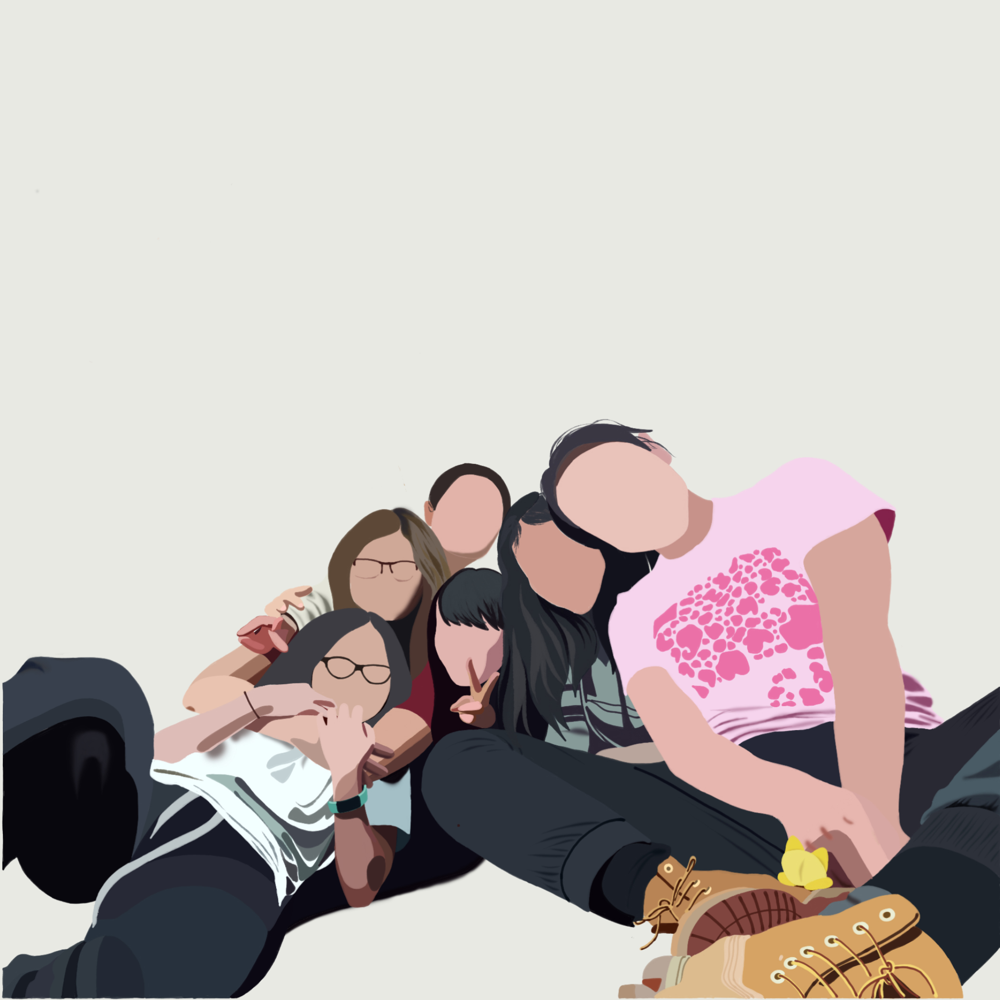
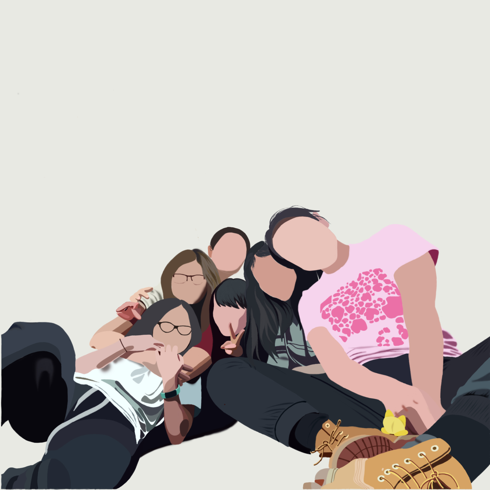

Thanks for stopping by my lil art corner :) Art has been an integral part of my life, and my greatest inspirations are my mom and Mrs. Jun from J Art Studio. I mostly create portraits or landscapes, but currently experimenting with fashion. Below are some of my proudest works. See more here.


 
